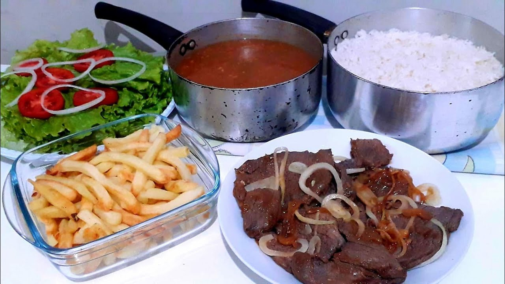
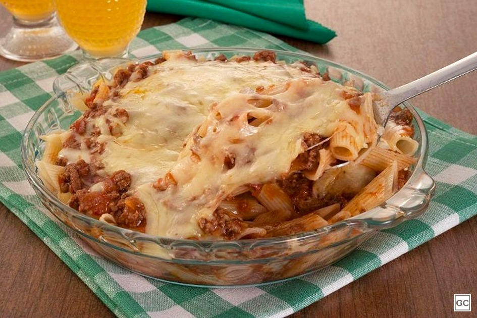
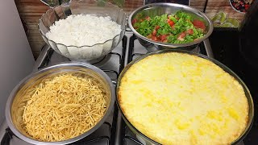
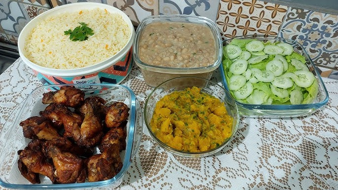

|  |
Segunda-feira |
Prato da Casa |
Arroz, Feijão, Bife acebolado, Batata frita e Salada com tomate. |
|  |
Terça-feira |
Macarrão na travessa |
Macarrão ao forno com molho de tomate, Queijo mussarela e Carne moida |
 |
Quarta-feira |
Estrogonofe |
Arroz, Estrogonofe de frango e batata palha. |
|  |
Quinta-feira |
Fricasse de Frango |
Fricasse de frango com patata-palha, Arroz e Salada de tomate e cebola. |
|  |
Sexta-feira |
Frango Frito |
Arroz, Feijão, Frango Frito, Salada de pepino e Purê de abobrinha. |
 |
Sabádo |
Feijoada |
Feijoada, Arroz, Farofa, Torresmo, Couve refogado e laraja. |